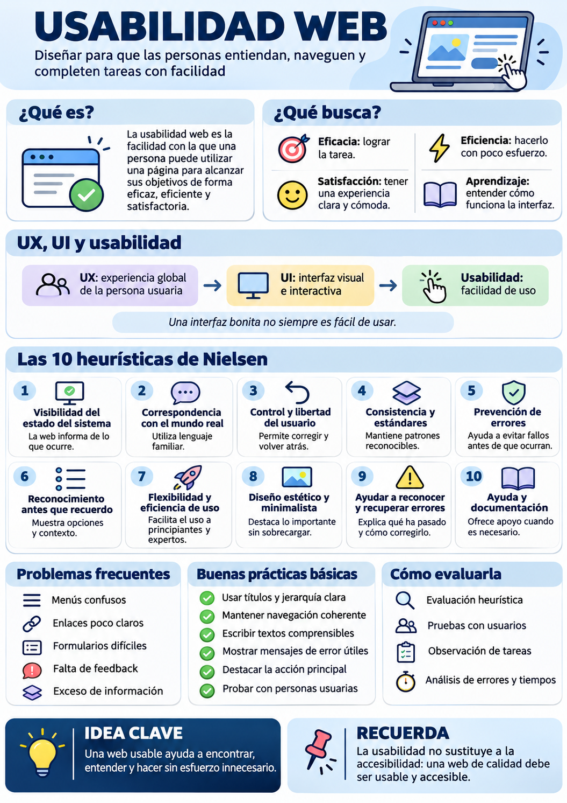

Eficacia
Consiste en conseguir el objetivo. Si una persona quiere reservar un libro y completa correctamente la reserva, la tarea ha sido eficaz.
Manual de UX, usabilidad y accesibilidad

Una página web puede funcionar correctamente desde el punto de vista técnico y, sin embargo, resultar difícil de utilizar. La usabilidad estudia cómo conseguir que las personas puedan alcanzar sus objetivos de forma sencilla, eficaz y sin esfuerzo innecesario.
Imagina que quieres reservar un libro en la web de una biblioteca. Encuentras el catálogo, seleccionas el libro y pulsas el botón de reserva, pero no aparece ningún mensaje que confirme la operación.
¿Se ha reservado correctamente? ¿Tienes que volver a pulsar? ¿Ha ocurrido algún error?
Aunque la página funcione, la falta de información provoca dudas. Este es un ejemplo de un problema de usabilidad.
Aprenderás a diferenciar usabilidad, UX, UI y accesibilidad; comprenderás las diez heurísticas de Jakob Nielsen y descubrirás cómo identificar problemas de navegación, formularios y organización del contenido.
Al finalizar, podrás realizar una evaluación sencilla de una página web y proponer mejoras justificadas.
La usabilidad es el grado en que determinadas personas pueden utilizar un producto para conseguir sus objetivos con eficacia, eficiencia y satisfacción en un contexto concreto.
En desarrollo web, nos interesa que las personas encuentren lo que buscan, comprendan las opciones disponibles y puedan completar sus tareas sin confusiones evitables.
Consiste en conseguir el objetivo. Si una persona quiere reservar un libro y completa correctamente la reserva, la tarea ha sido eficaz.
Se relaciona con los recursos y el esfuerzo necesarios para realizar la tarea. Una reserva que exige veinte pasos puede ser eficaz, pero poco eficiente.
Tiene que ver con cómo valora la persona su experiencia. Una navegación clara, mensajes comprensibles y ausencia de obstáculos favorecen una experiencia satisfactoria.
No existe una interfaz perfecta para todas las personas y situaciones. Una web puede resultar sencilla para alguien que la utiliza diariamente y confusa para quien entra por primera vez.
También influye el dispositivo utilizado: una navegación cómoda en un ordenador puede resultar difícil en un móvil si los controles son pequeños o la información aparece desorganizada.
Estos conceptos suelen aparecer juntos porque todos influyen en la calidad de una página web, pero tienen significados diferentes.
| Concepto | Qué estudia | Ejemplo |
|---|---|---|
| UX | La experiencia global de una persona al relacionarse con un producto o servicio. | Cómo se siente una persona durante todo el proceso de reservar un libro. |
| UI | La interfaz con la que interactuamos: controles, menús, formularios y elementos visuales. | El buscador, los botones de reserva y la organización visual del catálogo. |
| Usabilidad | La facilidad con la que las personas consiguen sus objetivos en un contexto. | Poder encontrar y reservar un libro sin pasos confusos. |
| Accesibilidad | La eliminación de barreras que dificultan o impiden utilizar el contenido y sus funciones. | Poder utilizar el catálogo mediante teclado y tecnologías de apoyo. |
La experiencia de usuario (UX) es más amplia que la usabilidad. Incluye las percepciones, expectativas y respuestas de las personas antes, durante y después del uso.
La interfaz de usuario (UI) es la parte con la que interactuamos. Puede tener un diseño visual atractivo, pero eso no garantiza que sea fácil de utilizar.
Por su parte, la accesibilidad y la usabilidad se complementan. Una aplicación debe permitir que las personas puedan utilizar sus funciones y que, además, puedan completar sus objetivos sin dificultades innecesarias.
Jakob Nielsen es uno de los principales referentes en el estudio de la usabilidad. Sus diez heurísticas son principios generales que ayudan a identificar problemas en las interfaces.
Se denominan heurísticas porque son criterios orientativos que podemos utilizar para evaluar un diseño. No son reglas de código que se cumplan automáticamente.
Vamos a estudiar cada principio con ejemplos de páginas web y situaciones habituales.
La interfaz debe informar a las personas sobre lo que está ocurriendo, especialmente después de realizar una acción.
Imagina que completas un formulario de contacto, pulsas Enviar y la pantalla permanece igual. No sabes si el mensaje se ha enviado, si está procesándose o si se ha producido un error.
Un diseño más usable puede comunicar diferentes estados: "Enviando mensaje", "Mensaje enviado correctamente" o "No se ha podido enviar. Inténtalo de nuevo".
Una web debe utilizar palabras y conceptos que resulten familiares a las personas, en lugar de obligarlas a comprender la terminología interna del sistema.
Por ejemplo, en una biblioteca resulta más comprensible encontrar una opción llamada "Renovar préstamo" que otra denominada "Actualizar estado de transacción".
También conviene presentar la información en un orden que responda a la lógica de la tarea, no necesariamente a la estructura de la base de datos.
Las personas pueden equivocarse, cambiar de opinión o decidir que no quieren continuar con una operación.
Una interfaz usable debe permitir cancelar, volver atrás o deshacer determinadas acciones cuando resulte posible.
Imagina que estás rellenando una solicitud y pulsas accidentalmente un botón. Si la web elimina inmediatamente todos los datos, perderás tu trabajo.
Una solución mejor consiste en conservar la información y ofrecer opciones claras para corregir, cancelar o regresar.
Los elementos que realizan funciones similares deben mantener nombres, apariencia y comportamiento coherentes.
Si en una página el icono de una lupa abre la búsqueda, no debería realizar una función completamente distinta en otra página del mismo sitio.
También debemos aprovechar las convenciones que las personas conocen: los enlaces permiten navegar y los botones ejecutan acciones.
Es preferible ayudar a evitar un error antes de que se produzca que limitarse a mostrar un aviso después.
Por ejemplo, si un formulario solicita una fecha en un formato determinado, conviene explicarlo antes de que la persona introduzca los datos.
Del mismo modo, si alguien está a punto de eliminar definitivamente un documento, puede resultar apropiado solicitar una confirmación clara.
Es más sencillo reconocer una opción visible que recordar información que apareció anteriormente en otra pantalla.
Imagina una tienda online en la que seleccionas una talla y un color. Al llegar al carrito, deberías poder ver esas opciones sin tener que regresar a la ficha del producto.
Cuando una web obliga a recordar códigos, referencias o selecciones anteriores, aumenta el esfuerzo mental necesario para realizar la tarea.
Una interfaz debe funcionar para quienes la utilizan por primera vez y también para las personas que la usan frecuentemente.
Un usuario principiante puede necesitar instrucciones claras y un recorrido guiado. En cambio, una persona con experiencia puede agradecer atajos, búsquedas rápidas o datos que pueda reutilizar.
Por ejemplo, en un formulario de contacto
podemos utilizar el atributo
autocomplete para facilitar
que el navegador complete información
conocida, cuando sea adecuado.
Una página no mejora simplemente porque incluya más imágenes, botones, colores o animaciones.
Cada elemento que mostramos compite por la atención del usuario. Si una pantalla contiene demasiados mensajes secundarios, puede resultar difícil encontrar la acción principal.
El minimalismo no significa eliminar información útil. Significa presentar lo necesario de forma organizada y sin elementos que dificulten la tarea.
Cuando se produce un error, el mensaje debe permitir comprender qué ha ocurrido y cómo solucionarlo.
Un mensaje como "Error 204" o "Datos inválidos" puede resultar insuficiente para alguien que no conoce el sistema.
En un formulario es más útil indicar: "Revisa el correo electrónico. Debe tener un formato como nombre@dominio.es".
Además, conviene mantener la información correcta que la persona ya había introducido para evitar que tenga que empezar de nuevo.
Aunque una interfaz debería resultar lo más comprensible posible, algunas tareas requieren instrucciones o información adicional.
Por ejemplo, un formulario que solicita un documento puede necesitar explicar qué formatos se aceptan, cuál es el tamaño máximo y dónde encontrar la información solicitada.
La ayuda debe ser fácil de localizar, estar relacionada con la tarea y utilizar un lenguaje comprensible.
Para comprender cómo se aplican estos principios en interfaces reales, te recomiendo el artículo de Cris Busquets publicado en uiFromMars.
Su explicación permite reconocer problemas frecuentes y comprender cómo una evaluación heurística ayuda a mejorar un diseño.
Leer: 10 reglas heurísticas de Nielsen y cómo aplicarlas — uiFromMars
También puedes consultar la formulación de referencia en Nielsen Norman Group .
Los principios anteriores pueden aplicarse a cualquier interfaz. Dos de las zonas donde suelen aparecer dificultades son los menús de navegación y los formularios.
Una navegación usable debe permitir saber dónde estamos, qué opciones tenemos y cómo acceder a otras secciones.
Los nombres de los enlaces deben describir su destino. Es preferible mostrar "Consultar horarios de la biblioteca" que un enlace genérico como "Haz clic aquí".
Los formularios deben explicar claramente qué información se solicita, qué campos son obligatorios y cómo corregir los errores.
Una buena interfaz también debe confirmar las operaciones realizadas y conservar los datos válidos cuando sea necesario corregir algún campo.
| Práctica confusa | Alternativa recomendable | Principio relacionado |
|---|---|---|
| Enlace "Haz clic aquí". | "Descargar la guía de matrícula (PDF)". | Correspondencia con el mundo real. |
| Un menú diferente en cada página. | Mantener nombres, orden y comportamiento coherentes. | Consistencia y estándares. |
| Formulario que borra todos los datos al fallar. | Conservar los valores correctos y explicar el error. | Control y recuperación de errores. |
| Botón Guardar sin respuesta visible. | Mostrar un mensaje de confirmación o de error. | Visibilidad del estado del sistema. |
| Solicitar un formato sin explicarlo. | Mostrar instrucciones antes de introducir los datos. | Prevención de errores. |
Para evaluar la usabilidad debemos observar si las personas pueden completar tareas reales. No basta con revisar el aspecto visual ni comprobar que los botones funcionan.
Podemos utilizar diferentes métodos.
Consiste en revisar una interfaz utilizando principios reconocidos, como las diez heurísticas de Nielsen.
Consisten en observar cómo personas representativas realizan tareas concretas con una web o prototipo.
Permiten conocer dificultades, expectativas y percepciones de las personas usuarias.
Podemos estudiar tareas completadas, tiempo empleado, errores y obstáculos para decidir qué debemos mejorar.
La evaluación heurística permite detectar problemas mediante una revisión experta. Las pruebas con usuarios aportan información sobre lo que ocurre cuando personas reales intentan realizar las tareas.
Son métodos complementarios: una heurística puede ayudarnos a anticipar un problema, pero observar a una persona permite descubrir dificultades que no habíamos previsto.
No todos los problemas tienen la misma gravedad. Para decidir cuáles conviene corregir primero, podemos considerar:
Por ejemplo, un problema que impide completar una reserva debe priorizarse frente a un detalle visual que apenas afecta al uso.
Objetivo: identificar problemas en una página web y proponer mejoras utilizando las heurísticas de Nielsen.
Material: navegador, una página web de tu elección y la tabla de observaciones.
| Heurística | Observación | Gravedad | Mejora propuesta |
|---|---|---|---|
| Visibilidad del estado | Al enviar un formulario no aparece ningún mensaje de confirmación. | Alta | Mostrar un mensaje que confirme el envío o indique el error. |
Resultado esperado: un breve informe en el que identifiques buenas decisiones de diseño y posibles mejoras justificadas.
Si no detectas problemas en una comprobación, indícalo. No es necesario inventar errores para completar la actividad.
Esta tabla resume las decisiones que debes tener presentes cuando diseñes o desarrolles una página web.
Puedes utilizarla como guía de revisión antes de publicar tus proyectos.
| N.º | Práctica | Qué debes comprobar |
|---|---|---|
| 1 | Navegación intuitiva | La persona puede encontrar lo que busca sin adivinar dónde está cada opción. |
| 2 | Diseño sencillo | Los elementos innecesarios no dificultan las tareas principales. |
| 3 | Consistencia | Menús, botones y controles similares mantienen un comportamiento coherente. |
| 4 | Jerarquía visual | La información y las acciones se organizan según su importancia. |
| 5 | Control del usuario | Es posible cancelar, volver atrás y corregir errores cuando corresponde. |
| 6 | Retroalimentación | La web informa de lo que ocurre después de las acciones relevantes. |
| 7 | Prevención de errores | Se ofrecen instrucciones y controles que ayudan a evitar equivocaciones. |
| 8 | Flexibilidad | La interfaz contempla diferentes dispositivos, necesidades y formas de interacción. |
| 9 | Contenido claro | Los títulos, enlaces y mensajes utilizan un lenguaje comprensible. |
| 10 | Pruebas con usuarios | Se observan tareas reales y se utilizan los resultados para mejorar. |
Utiliza esta lista para revisar tu propio proyecto. Las selecciones se guardarán en el navegador cuando el almacenamiento esté disponible.
Comprueba si has comprendido los conceptos fundamentales del tema.